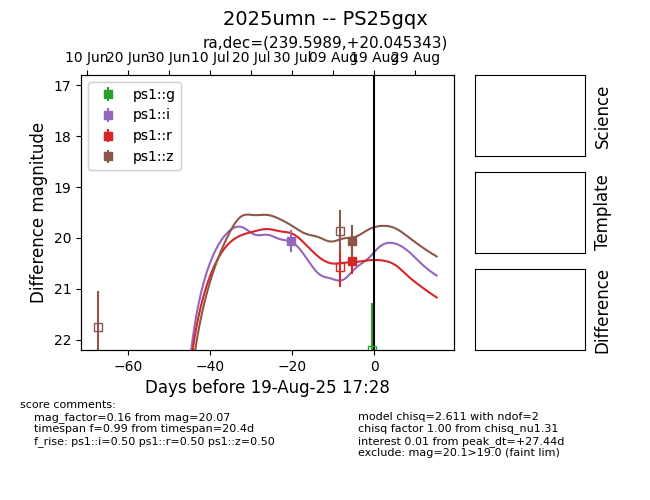

Target 2025umn at 2025-08-19 21:37, see:
TNS: wis-tns.org/object/2025umn
YSE: ziggy.ucolick.org/yse/transient_detail/2025umn
alt names
2025umn (yse,tns)
PS25gqx (panstarrs)
coordinates:
equatorial (ra, dec) = (239.5989,+20.04534)
galactic (l, b) = (33.8943,+46.82530)
photometry
last ps1::i=20.06, ps1::r=20.45, ps1::z=20.07
1 ps1::i, 1 ps1::r, 1 ps1::z detections
